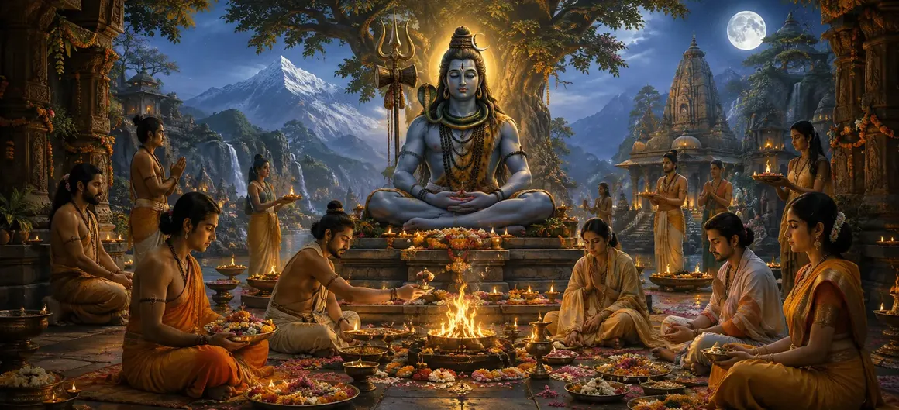

The Kamya Rites of Shiva's Followers
The sixty-fifth chapter of the Vayaviya Samhita delves into the unique mindset and execution of optional desire-based rites (Kamya Karma) performed by true devotees and followers of Lord Shiva.
Rishi Vayu explains how genuine bhaktas elevate optional rituals above ordinary material desire, infusing every act with supreme devotion, surrender, and spiritual alignment.
This chapter reveals the profound distinction between ordinary ritualistic pursuit and enlightened devotee practice.
Chapter 65 Highlights
Devotee Approach
How true followers execute Kamya rites.
Pure Surrender
Releasing ego in optional worship.
Elevated Intent
Transforming desires into divine offerings.
Sacred Practice
Ritual precision combined with deep bhakti.
Supreme Grace
Attaining ultimate realization through devotion.
Path Forward
Exploring hymns to Lord Shiva in Chapter 66.
Core Topics in This Chapter
- 01The Spiritual Mindset of Lord Shiva's Followers→
- 02Execution of Kamya Rites by Dedicated Devotees→
- 03Transcending Ordinary Material Attachment in Rituals→
- 04Dedicating All Ritual Fruits Solely to Lord Shiva→
- 05Harmonizing Action with Supreme Bhakti→
- 06Supreme Spiritual Rewards of Follower Observances→
- 07Transition to Chapter 66 (The Hymn to Lord Shiva)→
The Spiritual Mindset of Lord Shiva's Followers
Rishi Vayu explains that the true followers of Lord Shiva do not view rituals merely as transactional mechanisms, but as intimate expressions of love and surrender.
Their consciousness remains anchored in the divine presence regardless of external desires.
Execution of Kamya Rites by Dedicated Devotees
When followers undertake Kamya rites, they follow scriptural rules with meticulous care while maintaining a heart entirely devoted to Mahadeva.
The ritual is performed as a celebration of divine grace in action.
Transcending Ordinary Material Attachment in Rituals
The sage highlights that true devotees participate in desire-based rites without falling prey to selfish greed or narrow-minded obsession.
Their desires are pure, noble, and aligned with cosmic righteousness.
Dedicating All Ritual Fruits Solely to Lord Shiva
A distinguishing trait of Shiva's followers is the complete surrender of ritual outcomes directly at the lotus feet of the Supreme Lord.
Whether a boon is granted or withheld, their devotion remains unshakeable.
Harmonizing Action with Supreme Bhakti
Rishi Vayu emphasizes that external action and internal devotion must merge seamlessly to achieve spiritual perfection.
The follower's life becomes a living altar of worship.
Supreme Spiritual Rewards of Follower Observances
Through such purified observances, Shiva's followers attain not only their righteous objectives but also profound inner peace and liberation from bondage.
Grace flows effortlessly into their existence.
Transition to Chapter 66 (The Hymn to Lord Shiva)
Having explained the Kamya rites of Shiva's followers in Chapter 65, Rishi Vayu prepares to narrate Chapter 66, 'The Hymn to Lord Shiva'.
This next chapter will present powerful hymns praising the glory, majesty, and grace of Mahadeva.
Key Teachings of Chapter 65
Pure Love
Worship driven by devotion over transaction.
Ego Release
Surrendering personal outcome to Shiva.
Noble Desires
Keeping aspirations pure and ethical.
Inner Harmony
Merging action and bhakti completely.
Effortless Grace
Experiencing supreme peace through surrender.
Hymn Prelude
Setting up Chapter 66 praise of Shiva.
Spiritual Reflection
When true followers perform optional rites, their actions cease to be binding karma and transform into pure expressions of divine love and surrender to Lord Shiva.
Living the Message of Chapter 65
Approach your daily responsibilities and goals with a heart full of devotion, offering every outcome to Lord Shiva.
Let your spiritual practice be guided by sincerity rather than expectation.
Embrace surrender as the highest form of spiritual strength.
Key Spiritual Concepts
The specific manner in which devoted followers execute optional rites.
The yoga of relinquishing all ritual fruits to the Supreme Lord.
The attitude of pure devotion underlying all actions.
The exemplary code of conduct observed by true devotees of Shiva.
Absolute and undivided surrender at the feet of Mahadeva.
The attainment of divine consciousness through pure devotion.
Chapter Summary
Vayaviya Samhita Chapter 65 explores the Kamya rites of Shiva's followers, emphasizing how true devotees perform optional rituals with pure devotion, noble intent, ego release, and the absolute surrender of all fruits to Lord Shiva. This chapter paves the way for Chapter 66, 'The Hymn to Lord Shiva'.
Frequently Asked Questions
1. What is the primary focus of Vayaviya Samhita Chapter 65?
Chapter 65 focuses specifically on how dedicated followers and true devotees of Lord Shiva execute optional desire-based rites (Kamya Karma).
2. How do Shiva's followers approach Kamya rituals differently?
Shiva's followers perform Kamya rites with absolute surrender, pure devotion, and without worldly attachment, viewing every goal as an expression of divine will.
3. Who details these practices to the sages?
Rishi Vayu expounds the unique methods and spiritual attitude of Shiva's followers regarding Kamya rites to the assembled sages.
4. What is the next chapter for navigation after Chapter 65?
The next chapter for navigation is titled 'The Hymn to Lord Shiva'.
“When Shiva's followers perform optional rites, their worship transcends mere desire, transforming into an eternal song of pure devotion and surrender.”
Continue Through Vayaviya Samhita
Chapter 65 concludes The Kamya Rites of Shiva's Followers. Continue to The Hymn to Lord Shiva.